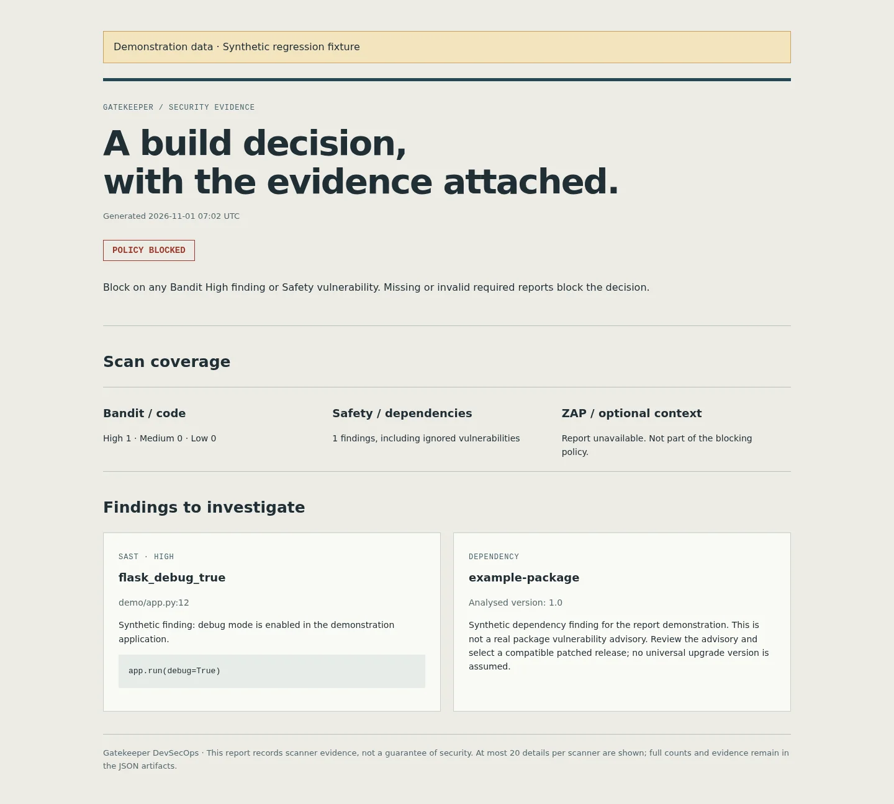

Gatekeeper
A build decision with its evidence attached. Turn Python code and dependency scans into an explicit pass or block, then attach a readable report for the reviewer.

Why it exists
Security scans need a clear consequence in the build process. Gatekeeper reads code and dependency reports, enforces a documented policy and produces a standalone HTML evidence report.
Fail closed on missing evidence
The previous parser could treat missing or malformed reports as zero findings. The updated gate exits 2 when required evidence is unavailable or invalid. Safety metadata and scanned-package evidence are required, so the legacy fabricated empty-report fallback is rejected.
A reusable action that enforces the policy
The composite action scans the caller checkout and declared requirements file, executes the bundled gate and uploads evidence even when the gate fails. Any Bandit High or Safety vulnerability blocks, including ignored dependency findings. Medium/Low Bandit issues remain visible; ZAP is optional context.
Verification and limits
Eight tests cover outcomes, malformed reports, scanner errors and HTML escaping. The report does not invent a universal patched package version. Its screenshot is generated from a synthetic regression fixture and carries a visible demonstration banner. The intentionally vulnerable Flask target can correctly produce a failing pipeline; scanner credentials and supported Safety report formats are still required.